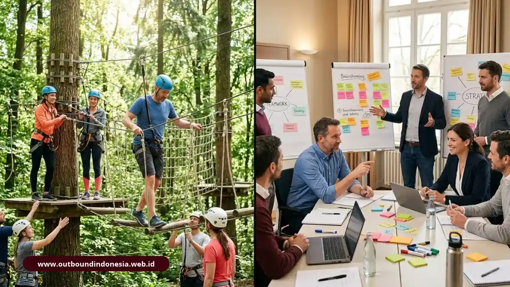
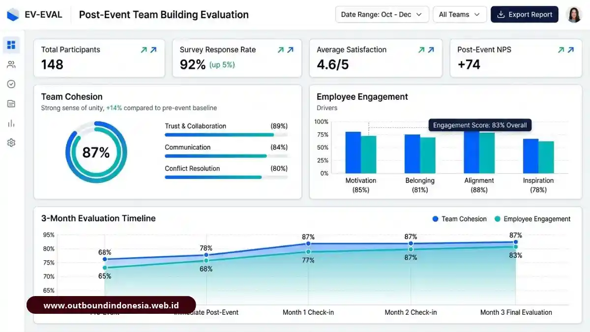
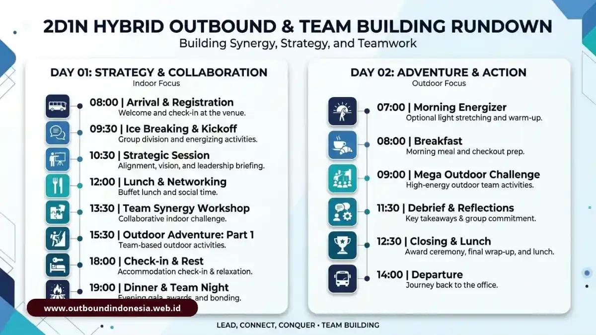
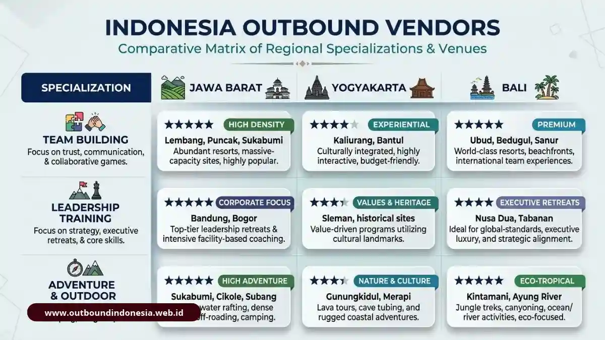
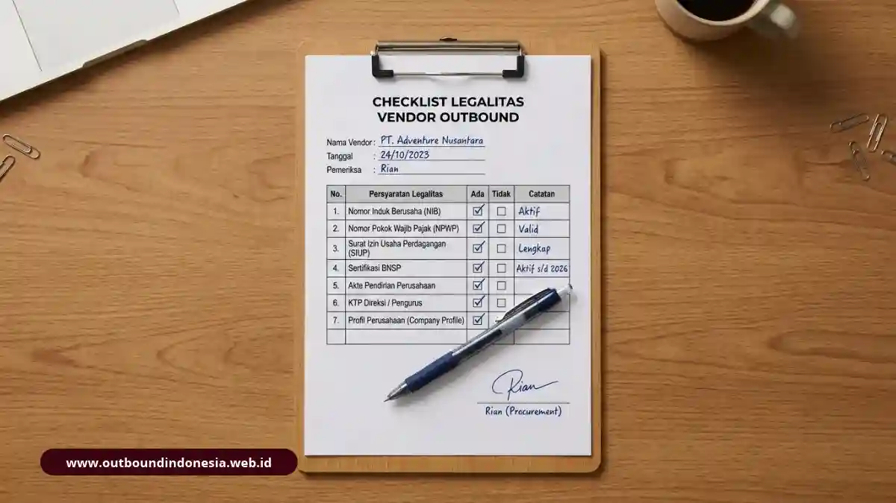
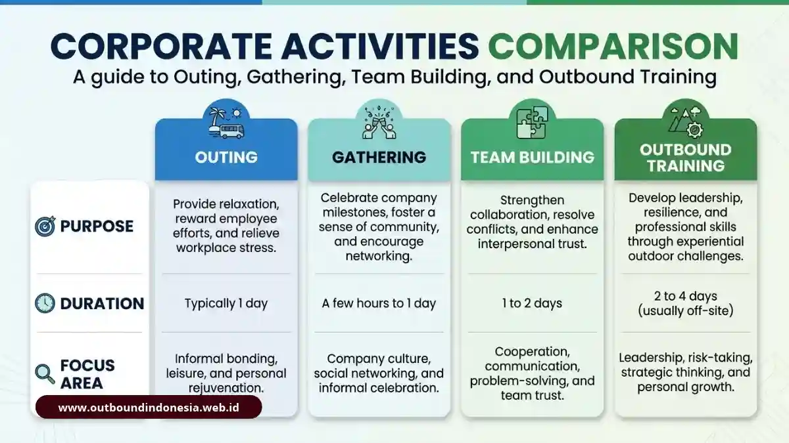
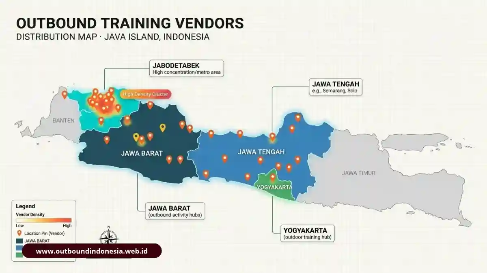
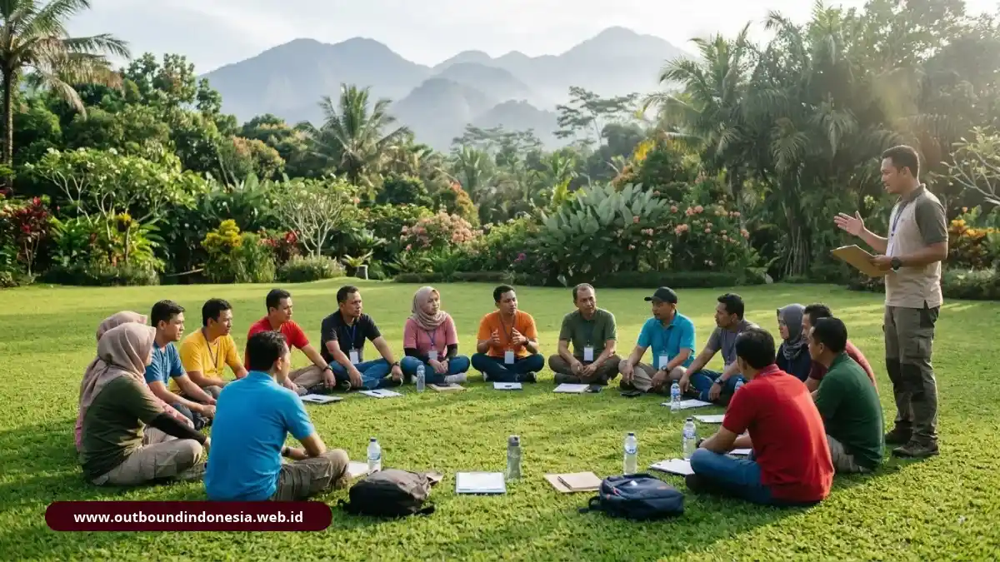
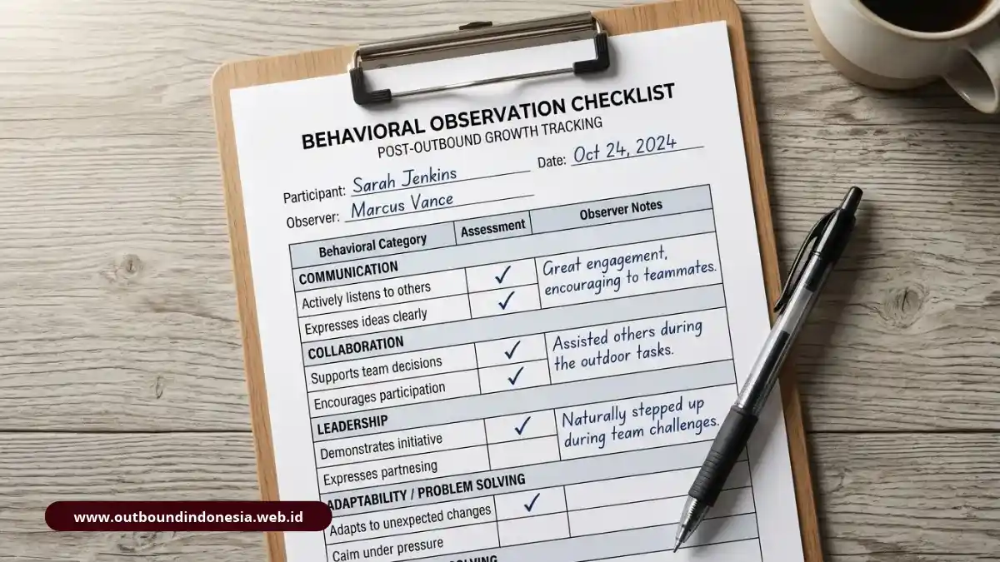
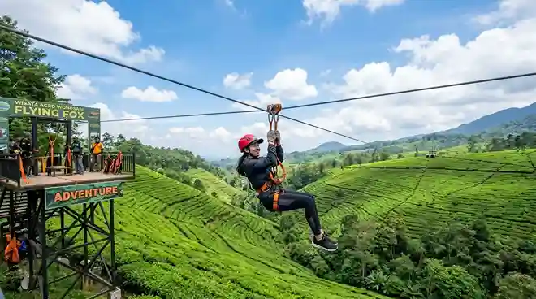

Semua Artikel
Outbound Training: Panduan Komprehensif Pengertian, Jenis, Manfaat, Biaya, dan Tips Memilih
Pelajari outbound training secara lengkap: pengertian, jenis aktivitas, manfaat individu dan tim, komponen biaya riil, dan tips memilih vendor profesional.
Baca SelengkapnyaJenis Permainan Outbound Training: Dari Ice Breaking hingga High Ropes Challenge
Kenali jenis permainan outbound training, dari ice breaking, low ropes, high ropes, balloon train, rakit, hingga permainan tradisional.
Baca SelengkapnyaManfaat Outbound Training bagi Kerja Sama Tim, Komunikasi, dan Kinerja Organisasi
Pelajari manfaat outbound training bagi kerja sama tim, komunikasi, dan kinerja organisasi, lengkap dengan data riset dan studi kasus industri.
Baca SelengkapnyaMerencanakan Outbound Training: Analisis Kebutuhan, Estimasi Biaya, hingga Memilih Vendor
Panduan lengkap merencanakan outbound training: tahapan, komponen biaya, standar keselamatan, checklist persiapan, dan kriteria memilih vendor.
Baca Selengkapnya
Perbedaan Outbound dan Team Building: Panduan Lengkap
Pelajari perbedaan outbound, team building, gathering, dan fun games. Mulai dari tujuan, teori Kolb-Tuckman, hingga matriks komparasi 6 parameter.
Baca SelengkapnyaCara Memilih Vendor Outbound & Team Building: 7 Kriteria
Gunakan 7 kriteria evaluasi dan bobot penilaian terukur agar anggaran pelatihan HRD tepat sasaran. Disertai checklist verifikasi sebelum SPK.
Baca Selengkapnya
Cara Mengukur Efektivitas & ROI Team Building Korporat
Ketahui cara mengukur efektivitas team building lewat 5 indikator perilaku, kuesioner Skala Likert 1-5, eNPS, dan jadwal evaluasi hingga 3 bulan.
Baca Selengkapnya
Hybrid Outbound & Team Building 2D1N Atasi Silo Mentality
Program hybrid 2 hari 1 malam untuk meruntuhkan silo mentality. Menggabungkan fun games, problem solving ber-debriefing, refleksi, dan rafting.
Baca Selengkapnya
Daftar Vendor Outbound di Indonesia & Perbandingannya
Lihat daftar vendor outbound terkemuka di Indonesia beserta kriteria evaluasi, matriks perbandingan per wilayah, dan panduan proposal HRD.
Baca Selengkapnya
Kriteria Memilih Vendor Outbound Kantor yang Aman
Pelajari kriteria memilih vendor outbound kantor: legalitas PT/CV, sertifikasi AELI/BNSP, standar safety, TNA, serta pencegahan biaya siluman.
Baca Selengkapnya
Beda Outing, Gathering, Team Building, Outbound Training
Pahami perbedaan outing, team building, dan outbound training agar HRD memilih program yang tepat. Disertai metode funneling debriefing.
Baca Selengkapnya
Vendor Outbound per Wilayah & Estimasi Biaya Paket
Temukan vendor outbound per wilayah (Jabodetabek, Jawa Barat, Jawa Tengah, Jogja) beserta studi kasus estimasi biaya paket rafting 2D1N.
Baca Selengkapnya
Pengertian Outbound Training: Definisi, Ciri, Contoh & Bedanya
Pahami pengertian outbound training, ciri-ciri, contoh aktivitas, dan bedanya dengan outing. Panduan lengkap sebelum merancang program tim.
Baca SelengkapnyaContoh Kegiatan Outbound Training: Low Impact dan High Impact
Daftar contoh aktivitas low impact dan high impact terpopuler, alur rundown sehari, standar keselamatan, serta pentingnya debriefing.
Baca Selengkapnya
Cara Mengukur Keberhasilan Outbound Training
Pelajari cara mengukur keberhasilan outbound training lewat 4 level evaluasi Kirkpatrick, indikator perilaku kerja, dan jadwal evaluasi bertahap.
Baca Selengkapnya
Panduan Komprehensif Outbound Indonesia: Pengertian, Jenis, Biaya & Tips Memilih
Panduan utama outbound di Indonesia: definisi akademis, siklus Kolb, meta-analisis riset, rincian biaya paket, dan cara memilih vendor kredibel.
Baca Selengkapnya
Experiential Learning Outbound & 12 Games Team Building
Penjelasan 4 tahap siklus belajar Kolb, bukti riset kenaikan skor kolaborasi 56%, 12 contoh games, dan teknik debriefing funneling.
Baca Selengkapnya
Biaya Paket Outbound Perusahaan & Lokasi Terbaik
Panduan penyusunan RAB outbound per peserta, perbandingan 6 jenis paket website, tarif tiket wahana, dan daftar venue terbaik Indonesia.
Baca Selengkapnya
Standar Fasilitator Outbound BNSP AELI & Pilih Vendor
Ulasan KEP 329/MEN/XII/2011, 9 unit kompetensi instruktur, mitigasi risiko K3, serta checklist HRD dalam memilih vendor EO terpercaya.
Baca Selengkapnya
Alat Keselamatan Teknis & Navigasi Darat di Gunung
Panduan alat keselamatan high rope, harness, karabiner, serta sistem navigasi darat & protokol STOP saat tersesat.
Baca SelengkapnyaPanduan Lengkap Perlengkapan Outbound Pegunungan
Panduan lengkap perlengkapan outbound pegunungan mulai dari alat keselamatan teknis hingga kenyamanan termal.
Baca SelengkapnyaPanduan Layering System Jaket & Karakteristik Bahan Tenda
Panduan menghadapi suhu ekstrem pegunungan, sistem 3 lapis jaket (base, mid, outer), serta perbandingan bahan tenda.
Baca SelengkapnyaStrategi Logistik, Checklist P3K & Packing Carrier 3D2N
Panduan taktik packing carrier 4-zone, isi kotak P3K, dan checklist logistik outbound 3 hari 2 malam.
Baca SelengkapnyaRekomendasi Tempat Outbound Terpopuler di Malang Raya
Review lokasi dan rekomendasi tempat outbound terpopuler di Malang Raya: Lawang Malang, Batu, Pujon, dan Coban Rais.
Baca SelengkapnyaPanduan Memilih Paket Outbound Malang yang Tepat
Panduan lengkap memilih paket outbound Malang yang sesuai anggaran, jumlah peserta, dan tujuan acara.
Baca SelengkapnyaTidak Ditemukan
Coba gunakan kata kunci pencarian lain atau pilih kategori artikel yang berbeda.